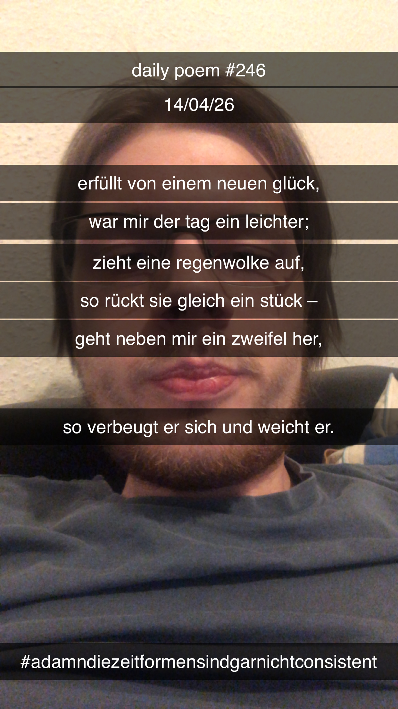

Erfüllt von einem neuen Glück
[246]Erfüllt von einem neuen Glück,
War mir der Tag ein leichter;
Zieht eine Regenwolke auf,
So rückt sie gleich ein Stück –
Geht neben mir ein Zweifel her,
So verbeugt er sich und weicht er.

Erfüllt von einem neuen Glück,
War mir der Tag ein leichter;
Zieht eine Regenwolke auf,
So rückt sie gleich ein Stück –
Geht neben mir ein Zweifel her,
So verbeugt er sich und weicht er.
